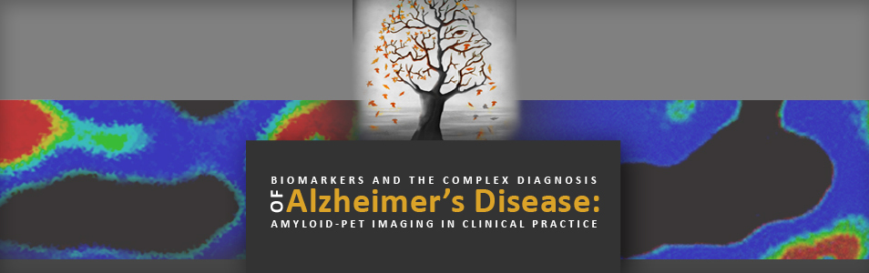

Alzheimer Diseases
At Seven hills for Alzheimer's Care Imaging and Research, we are dedicated to diagnosing and caring for Alzheimer?s and related memory disorders and finding more effective treatments for these devastating conditions. The Center works to raise dementia care standards by empowering patients, caregivers and physicians with the most current knowledge available, including the latest advances in research.
Each patient who visits CACIR receives care from a team of dementia experts, who work closely to provide definitive diagnosis and a personalized management plan. The Center employs state-of-the-art diagnostic methods such as positron emission tomography (PET) imaging to help distinguish between the many different causes of dementia.
Recommended Doctors
- Name: Dr. Jordan Zeus
Specialities: Alzheimer Diseases, Dementia, Concussion - Name: Dr. Neha Tondon
Specialities: Alzheimer Diseases, Cognitive disorders